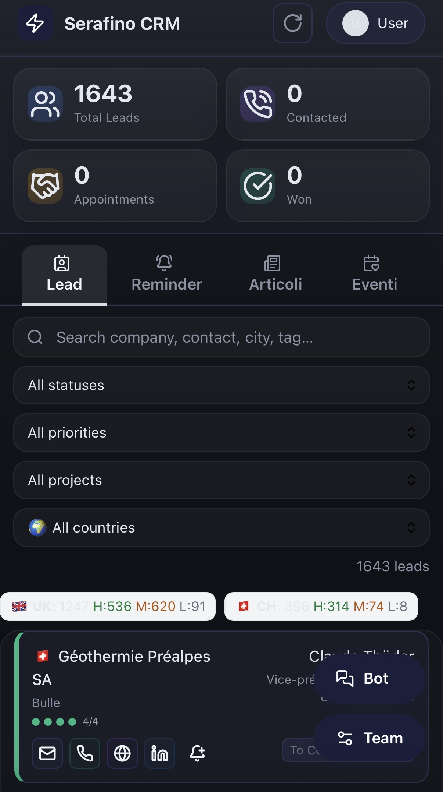

Le système en images
Ce que l'équipe commerciale voit au quotidien.

Poste de pilotage CRM: information centralisée, pipeline structuré, actions rapides et synchronisation Google Sheets en temps réel.

Vue leads qualifiés: filtres, statuts et enrichissement complet pour chaque contact.

Interface mobile: 1 643 leads, tabs Lead / Reminder / Articoli / Eventi — accessible depuis n'importe quel appareil.